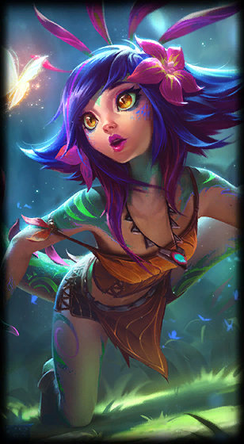

Neeko
the Curious Chameleon
Class :
Mage, Support
Lore :
Hailing from a long lost tribe of vastaya, Neeko can blend into any crowd by borrowing the appearances of others, even absorbing something of their emotional state to tell friend from foe in an instant. No one is ever sure where—or who—Neeko might be, but those who intend to do her harm will soon witness her true colors revealed, and feel the full power of her primordial spirit magic unleashed upon them.
Stats :
| Health | Health per level | Mana | Mana per level | Movement speed | Armor | Armor per level | MR | MR per level | Range | HP regen | HP regen per level | Mana regen | Mana regen per level | Crit | Crit per level | AD | AD per level | AS per level | AS |
|---|---|---|---|---|---|---|---|---|---|---|---|---|---|---|---|---|---|---|---|
| 540 | 90 | 450 | 30 | 340 | 21 | 4 | 30 | 0.5 | 550 | 7.5 | 0.75 | 7 | 0.7 | 0 | 0 | 48 | 2.5 | 3.5 | 0.625 |

Passive : Inherent Glamour
Neeko can look like an ally champion. Taking damage from enemy Champions or casting damaging spells breaks the disguise.